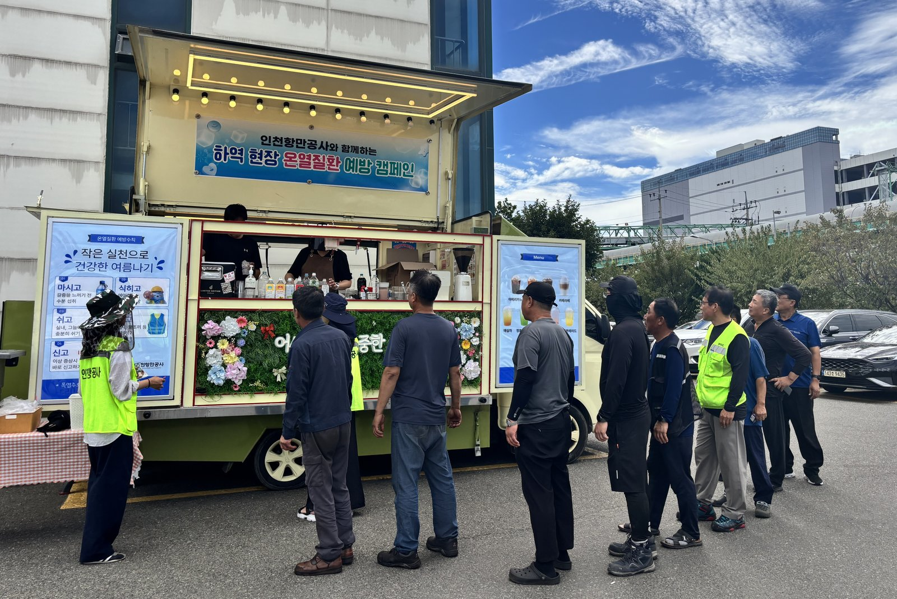
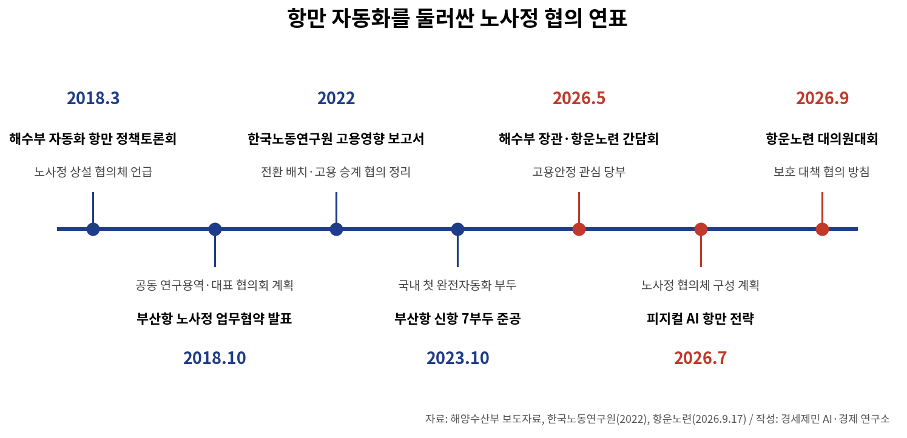
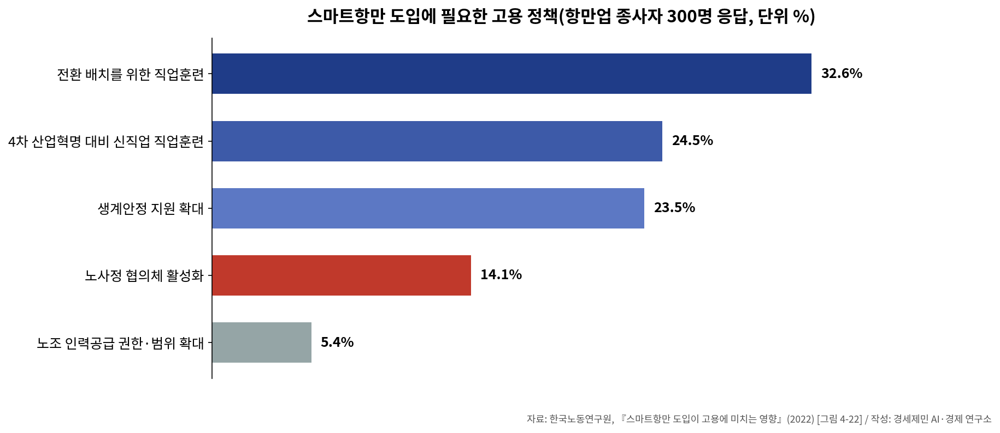

[해양 AI 융복합⑭] 항만 자동화 앞 '보호 대책 먼저' 요구한 항운노련과 해외 항만의 생산성 이득 공유
2018년 시작된 부산항 노사정 협의와 피지컬 AI 항만 전략의 협의체 계획
로테르담 조기퇴직, 함부르크 생산성 연동 임금, 미국 동부 6년 협약
AI경제저널=김갑봉 기자 | 2026년 9월 17일 부산에서 전국항운노동조합연맹(항운노련) 정기 전국대의원대회가 열렸다. 항운노련은 이 자리에서 AI·자동화 도입에 앞서 보호 대책이 마련되도록 정부·관계 기관과 협의하겠다고 밝혔다. 항만 자동화를 둘러싼 노사정 협의 경과와 해외 항만의 노사 합의 사례를 사실로 짚는다.
항운노련 대의원대회와 정부 계획
대의원들은 사업계획을 의결하고 결의문을 채택했다. 항운노련이 든 보호 대책은 고용 안정, 전환 배치, 직무 전환과 재교육이다. 항운노련은 석탄화력발전소 폐쇄 지역 조합원 고용안정 대책과 4대 항만공사 통합 대응도 과제로 올렸다.

황종우 해양수산부(해수부) 장관은 5월 18일 김상식 항운노련 위원장 등과 간담회를 열었다. 황 장관은 항만 노동자가 안전하고 걱정 없이 일할 수 있는 환경을 만드는 것이 항만 경쟁력의 초석이라고 했다. 김 위원장은 정부가 항만 노동자 고용안정에 계속 관심을 가져 달라고 당부했다.
해수부 7월 피지컬 AI 항만 전략에는 노사정 협의체를 꾸려 단계적으로 전환한다는 계획이 있다.
2018년 시작된 부산항 노사정 협의
해수부는 2018년 3월 28일 부산에서 자동화 항만 정책토론회를 연다고 하루 전 알렸다. 임현철 당시 항만국장은 "노사정 상설 협의체를 구성하여 운영하는 등 실직자 없는 항만 자동화를 이루기 위해 적극 노력하겠다"고 말했다.
해수부는 그해 10월 23일 부산항운노조, 부산항만물류협회, 부산항만공사와 이튿날 업무협약을 맺는다고 밝혔다. 협약에는 정부와 노조가 각각 제안한 기관 두 곳의 공동 연구용역, 노사정 대표 협의회와 실무협의체 구성이 담겼다.

한국노동연구원 2022년 보고서에 따르면 항운노조는 직업안정법상 근로자공급사업 허가를 갖고 항만에 인력을 댄다. 보고서는 항만인력법이 상용 고용으로 바뀐 노동자의 근로조건을 보장한다고 정리했다. 항만재개발법은 재개발로 작업장이 없어진 항운노조원에게 생계지원금을 줄 수 있게 했다.
보고서는 기존 부두 인력을 두고 노사정이 2018년부터 직무 전환 교육과 전환 배치, 부두 간 고용 승계를 협의해 왔다고 적었다.
항만업 종사자 300명이 꼽은 고용 정책
연구진은 부산·광양·인천 항만업 사업체 300곳을 설문했다. 사업체는 고용 친화 정책 9개 가운데 재직자 직업전환 교육(5점 만점 3.30점)과 디지털 교육훈련(3.26점)만 긍정적으로 평가했다.
연구진은 이어 그 업체 종사자 300명에게 스마트항만에 대비한 고용 정책을 물었다.
전환 배치를 위한 직업훈련이 32.6%로 가장 많았다. 4차 산업혁명 대비 신직업 직업훈련 24.5%, 생계안정 지원 확대 23.5%가 뒤를 이었다.
응답자 64.4%는 교육훈련 기회가 늘 것으로 봤다. 고용 안정성은 줄 것 15.3%, 늘 것 5.7%, 변화 없음 79.0%였다.

보고서에는 2020년 한국해양수산개발원 쟁점표도 실렸다. 부산항 북항 A부두 폐쇄와 신항 자동화를 두고 노조·운영사·항만 당국 입장을 견준 표다.
노조는 북항 인력 전원 전환 배치와 기존 호봉·복지 유지를 요구했다. 운영사는 필수 인력을 뺀 나머지 인력 감축과 일용직 전환, 직종별 급여를 내세웠다. 항만 당국은 노사관계 안정과 교육 기반 마련, 법에 따른 보상안을 들었다.
연구진은 당시 북항 개발과 관련해 운영되던 노사정 협의체를 바탕으로 범위를 넓히자고 제안했다.
해외 항만이 나눈 생산성 이득
국제교통포럼(ITF)은 경제협력개발기구(OECD)와 행정적으로 묶인 정부 간 기구다. 2021년 보고서는 캐나다 항만노조가 의뢰한 2019년 조사를 인용해 감원 폭을 들었다.
터미널 일부를 자동화한 미국 로스앤젤레스 트래팩 터미널은 40~50%, 호주 시드니 패트릭 터미널은 50% 가까이 인력이 줄었다. 이 조사는 중국 칭다오 완전자동화 터미널 인력이 85% 줄 것으로 내다봤다.
보고서는 "자동화는 노동자가 생산성 이득을 나눠 가질 때 훨씬 받아들일 만하다"고 적었다. 1990년대 로테르담항 자동화에는 기존 노동자 임금 인상과 조기퇴직 프로그램 합의가 따랐다. 독일 함부르크 알텐베르더 터미널은 노동자 임금을 자동화로 얻은 전체 생산성 향상분과 개인 생산성에 연동한다고 보고서는 소개했다.
보고서에 따르면 함부르크 항만 인력풀은 기금에서 임금을 준다. 기금은 운영사 매출에 따른 분담금과 항만 이용자가 하역료에 얹어 내는 금액으로 채운다.
국제교통포럼은 정부가 자동화 사업을 따질 때 감원에 따른 사회보장 지출과 줄어드는 세수를 셈에 넣어야 한다고 권고했다.
미국 동부 항만의 6년 협약
미국 동부·멕시코만 연안 항만 노동자를 대표하는 국제항만노동자협회(ILA)는 2024년 10월 사흘 동안 파업했다.
ILA와 사용자단체 미국해운연합(USMX)은 2025년 1월 8일 잠정 합의했다. 두 단체 공동성명은 현재 일자리를 지키고 일자리를 더 만드는 기술 도입 틀을 세운다고 밝혔다.
조합원 99% 가까이가 2월 25일 찬성했다. 두 단체는 3월 11일 정식 서명했다. ILA는 6년 동안 임금을 62% 올리고 자동화에 맞선 완전한 보호 조항도 얻었다고 밝혔다.
USMX 수석 협상가인 폴 드마리아 수석부사장 겸 최고운영책임자는 회원사 만장일치 지지를 받은 협약이라고 했다. 업계 전반에 현대적이고 안전한 작업 여건을 만든다는 USMX 사명을 진전시킨다고도 했다. 협약 기간은 2030년 9월 30일까지다.
참고문헌
- 해양수산부, 「해수부, 스마트 자동화 항만 구축을 위한 논의의 장 마련」, 2018년 3월 27일(3월 28일 조간). https://www.mof.go.kr/doc/ko/selectDoc.do?docSeq=19374&bbsSeq=10&menuSeq=971
- 해양수산부, 「항만자동화의 방향, 노.사.정이 함께 만들어 간다」, 2018년 10월 23일(10월 24일 조간). https://www.mof.go.kr/doc/ko/selectDoc.do?docSeq=23693&bbsSeq=10&menuSeq=971
- 해양수산부, 「국내 최초 완전자동화 항만 준공 기념, 자동화장비 시연행사 개최」, 2023년 10월 26일(10월 27일 조간). https://www.mof.go.kr/doc/ko/selectDoc.do?docSeq=53731&bbsSeq=10&menuSeq=971
- 해양수산부, 「(동정) 황종우 장관, 항운노조 간담회를 개최하여 현장 목소리 경청」, 2026년 5월 18일. https://www.mof.go.kr/doc/ko/selectDoc.do?docSeq=66627&bbsSeq=10&menuSeq=971
- 해양수산부, 「항만이 ‘하나의 거대한 지능형 로봇’으로, 피지컬 AI 항만혁신 본격 추진」, 2026년 7월 22일(7월 23일 석간). https://www.mof.go.kr/doc/ko/selectDoc.do?docSeq=67543&bbsSeq=10&menuSeq=971
- 김기덕·윤석천·김홍준·김영빈, 『스마트항만 도입이 고용에 미치는 영향』, 2022년 고용영향평가 사업, 한국노동연구원 고용영향평가센터, 2022년 12월. https://repository.kli.re.kr/handle/2021.oak/9606
- ITF, "Container Port Automation: Impacts and Implications", 『International Transport Forum Policy Papers』 No.96, OECD Publishing, 2021년 10월. https://doi.org/10.1787/8db18610-en
- Prism Economics and Analysis, "Economic Impact Study of Digitization and Automation of Marine Port Terminal Operations in British Columbia", ILWU Canada 의뢰, 2019년 7월. https://ilwu.ca/wp-content/uploads/prism-ilwu_report-a3-aug14.pdf
- International Longshoremen’s Association, "International Longshoremen’s Association (ILA) and United States Maritime Alliance (USMX) Announce Tentative Agreement on New Six-Year Master Contract", 2025년 1월 8일. https://ilaunion.org/international-longshoremens-association-ila-and-united-states-maritime-alliance-usmx-announce-tentative-agreement-on-new-six-year-master-contract/
- International Longshoremen’s Association, "Rank-and-File Members of International Longshoremen’s Association At Atlantic and Gulf Coast Ports Overwhelmingly Ratify Provisions of New Six-Year Master Contract", 2025년 2월 25일. https://ilaunion.org/rank-and-file-members-of-international-longshoremens-association-at-atlantic-and-gulf-coast-ports-overwhelmingly-ratify-provisions-of-new-six-year-master-contract/
- International Longshoremen’s Association, "International Longshoremen’s Association and United States Maritime Alliance Officially Sign Historic Six-Year Master Contract Agreement at Ceremonies in New Jersey; ILA Longshore Workers On Atlantic and Gulf Coasts Receive Record Increase In Wages and Benefits In Contract That Now Is In Effect Until September 30, 2030", 2025년 3월 11일. https://ilaunion.org/international-longshoremens-association-and-united-states-maritime-alliance-officially-sign-historic-six-year-master-contract-agreement-at-ceremonies-in-new-jersey-ila-longshore-workers-on-a/
- [사진1] 인천항만공사 보도자료 「인천항만공사, 폭염 속 항만근로자 보호 위해 현장 대응 강화」, 2026년 8월 13일 배포(8월 14일 조간), 붙임 사진1(2026년 8월 13일 인천내항, 사진제공 인천항만공사), 공공기관 보도자료 사진(출처 표시), https://www.icpa.or.kr/article/view.do?articleKey=32750&boardKey=217&menuKey=400
- [도표1] 경세제민 AI·경제 연구소 작성. 자료 해양수산부 보도자료(2018.3.27, 2018.10.23, 2023.10.26, 2026.5.18, 2026.7.22), 한국노동연구원(2022), 항운노련 정기 전국대의원대회(2026.9.17)
- [도표2] 경세제민 AI·경제 연구소 작성. 자료 한국노동연구원, 『스마트항만 도입이 고용에 미치는 영향』(2022) [그림 4-22]
[사진·도표 출처]
- [사진1] 해양수산부 사진뉴스, 「[포토뉴스] 광양항에서 '항만자동화 시험장' 구축사업 착공식 개최」, 2026년 7월 31일 게시(원 파일 DSC09321), 공공기관 자료(출처 표시), https://www.mof.go.kr/doc/ko/selectDoc.do?docSeq=67726&bbsSeq=15&menuSeq=381
- [도표1] 경세제민 AI·경제 연구소 작성. 자료 해양수산부 업무보고(2025.12.23), 「피지컬 AI 항만 전략」(2026.7.23), 싸이버로지텍 보도자료(2025.11.14)
- [도표2] 해양수산부, 「해양수산 분야 인공지능 전환(AX)으로 바다의 가치를 혁신한다」 보도자료(hwpx) 「참고」 표 항만·물류 목표 그림, 2026년 10월 28일, 공공기관 자료(출처 표시), https://www.mof.go.kr/doc/ko/selectDoc.do?docSeq=69135&bbsSeq=10&menuSeq=971
관련기사
- [해양 AI 융복합⑬] 2032년 1단계 9선석 진해신항, 2조원 장비와 단일 운영사로 짜는 피지컬 AI 항만
- [해양 AI 융복합⑫] 실증·인증 한데 모을 광양 첨단항만기술원 구상, 2027년 타당성 검토 앞둔 입지 논쟁
- [해양 AI 융복합⑪] 2028년 완전자동화 부두 앞둔 인천 신항, 크레인은 중국산·운영 프로그램은 국산
- [해양 AI 융복합⑩] 부두 하나서 효율 17% 올린 디지털 트윈, 부산항 전체로 넓히는 388억원 계획
저작권자 © AI경제저널 무단전재 및 재배포, AI학습 및 활용 금지